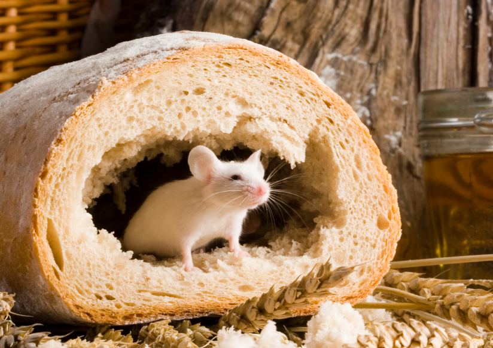

<div id="mainContent">
	<div id="contentWrapper">
		</img>
		<h1>Food Safety</h1>
		<h2>AIB FOOD SAFETY TRAINING AND AUDIT REVIEW</h2>
		<div class="food-safety-regulatory jumbotron">
			<h2>FOOD SAFETY REGULATORY AFFAIRS, FOOD SATEFY and MODERNIZATION ACT FSMA</h2>
			<h2>Dates Scheduled Throughout the Year</h2>
			<h2>AIB FOOD SAFETY BEST PRACTICES OVERVIEW</h2>
			<h2>Dates Scheduled Throughout the Year</h2>
			<h2>1-800-248-9253 for seminar information or contact me at 732-680-0005</h2>
		</div>

		<h2>We will guide your facility through the process and help you prepare for a Food Safety Audit. This includes a review of the following:</h2>

		<h2>PEST CONTROL PROGRAMS </h2>
		<ul class="list-group">
			<li class="list-group-item">Bird Control</li>
			<li class="list-group-item">Insects</li>
			<li class="list-group-item">Rats and mice</li>
		</ul>
		<h2>If you fail here you will not pass a food safety audit!</h2>

		<h2>SANITATION</h2>
		<ul class="list-group">
			<li class="list-group-item">Creating a Master Cleaning Schedule</li>
			<li class="list-group-item">Individual cleaning assignments</li>
			<li class="list-group-item">Employee training</li>
			<li class="list-group-item">GMP’s (Good Manufacturing Practices)</li>
		</ul>

		<h2>RECORD KEEPING & TRAINING REQUIREMENTS</h2>

		<h2>REGULATORY AFFAIRS & INSPECTIONS PROGRAMS</h2>

		<h2>FOOD PLANT DEFENSE PROGRAMS</h2>

		<h2>RECALL PROGRAMS</h2>

		<h2>TRACEABILITY PROGRAMS</h2>

		<h2>BUILDING & GROUNDS WALKTHROUGH CHECK LISTS</h2>

		<h2>CUSTOMER COMPLAINTS</h2>

		<h2>HAZARD COMMUNICATION PROGRAMS</h2>

		<h2>I CAN HELP YOU AND YOUR TEAM PREPARE AND PASS A FOOD SAFETY AUDIT & ACHIEVE THE HIGHEST POSSIBLE SCORE.</h2>

		<h2>KEEP YOUR CUSTOMERS HAPPY!</h2>

	</div>
</div>
